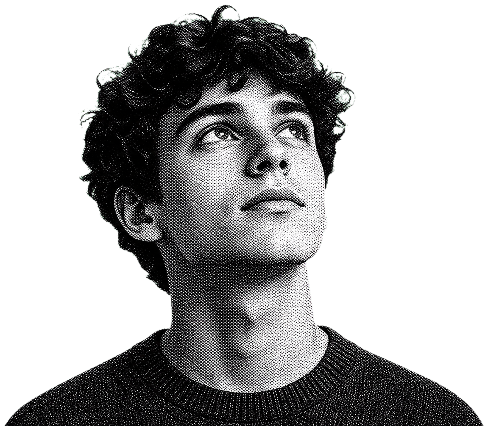
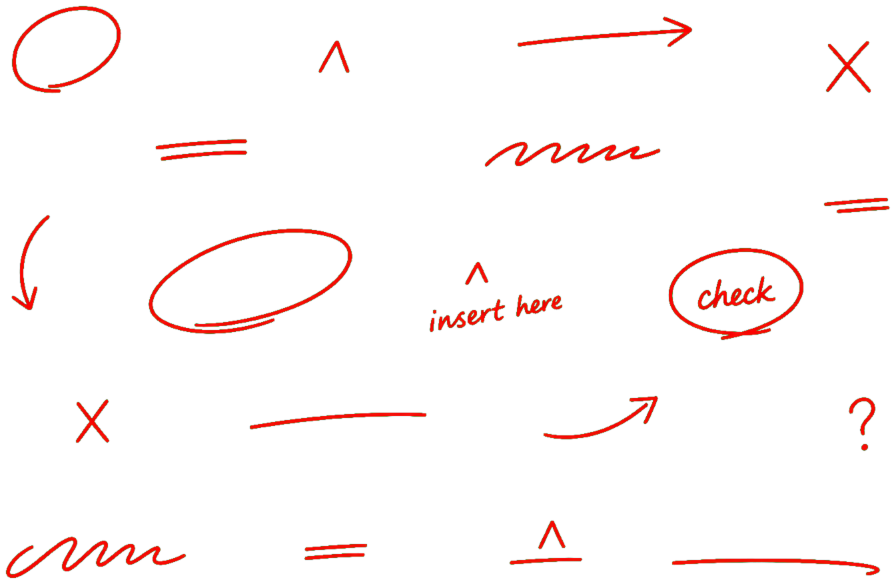
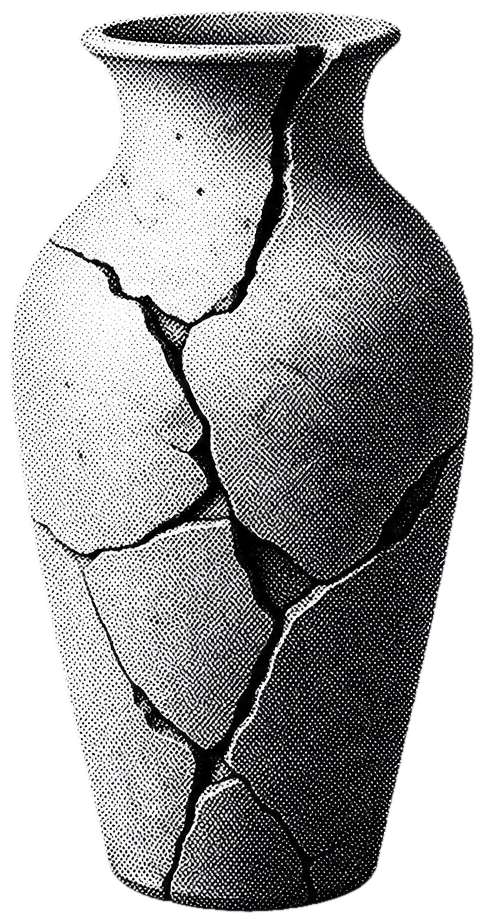
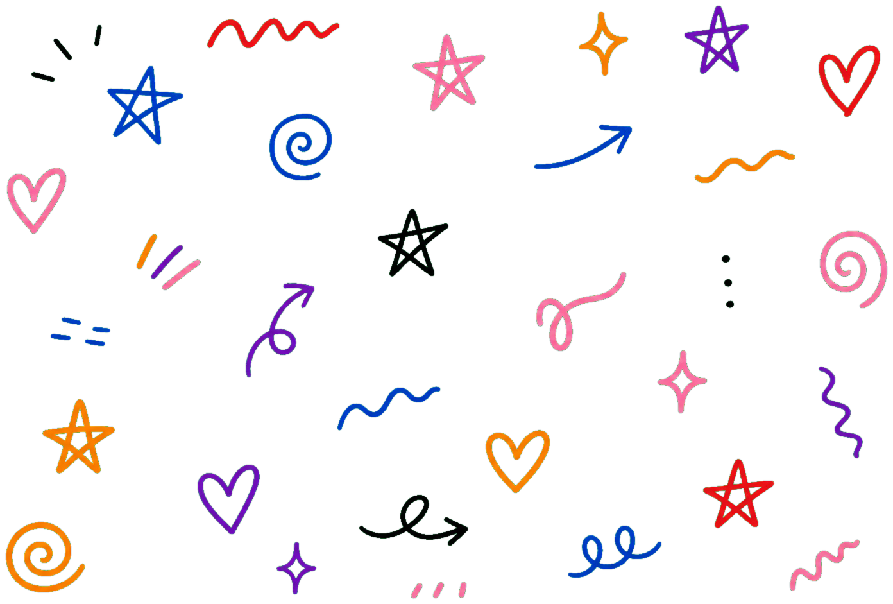
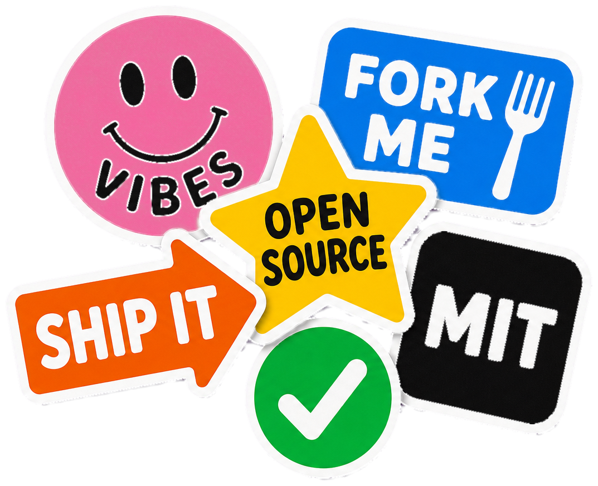
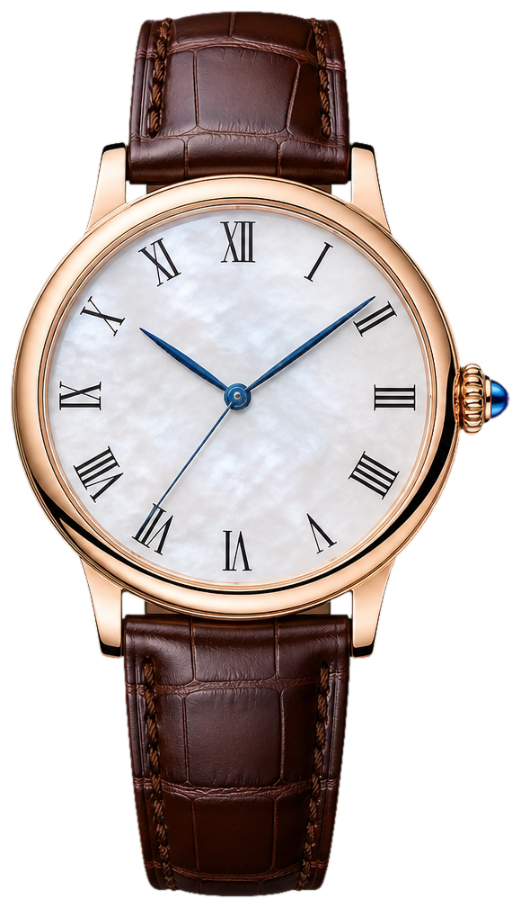
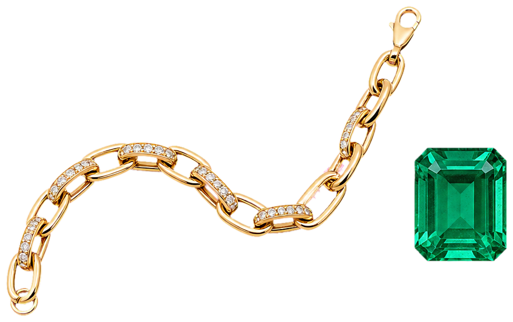
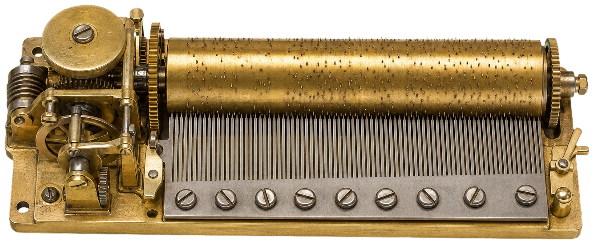

Cinematic dark landing
Compose a GPU-led hero with a loader ritual, technical HUD and one signature pointer effect.
compiling worlds. switching is part of the design.
— transmission 01 / cinematic-dark
An anti-template framework. Pick a Style World, compose mechanics, ship a brand only that brand could own. Switch the world above — every section reshapes itself.
CoolLanding skill / design primitives
Use this world when a launch needs to feel like software, signal and ceremony. The page is built from one anchor object, not a decorative background.
Compose a GPU-led hero with a loader ritual, technical HUD and one signature pointer effect.
Black stage, luminous core, GPGPU particles, HDR bloom, chromatic composite, grain.
Time, pointer, scroll and click must change pixels in a real browser before the world is considered alive.
— chapter 01 / composition
A fragment shader with pointer, scroll, and time uniforms. The brand is the way the field reacts.
// uniforms u_mouse, u_scroll, u_time
A morphing core + count + line. The site opens like a piece of software, not a website.
boot.percent → 100; pulse = 1
The wordmark resolves from noise on first paint and on hover. Identity earned, not declared.
resolve('COOL/LANDING')
A raymarched chrome sigil with an emissive core — a 3D anchor object no other brand owns.
sdTorus(R*q, vec2(1.0, .135))
— chapter 02 / signature
Scroll is not navigation here — it is throttle. As you descend, the camera dollies into the swarm, the orbit accelerates, and the bloom swells. Click anywhere to fire a shockwave through the field.
— chapter 03 / pipeline
Curl-noise advects every particle inside a floating-point FBO, ping-ponged each frame.
pos₁ = sim(pos₀, curl, attractor, shock)Positions are drawn as additive points through a real perspective camera into a half-float scene buffer.
blendFunc(ONE, ONE)Only highlights above threshold survive into the bloom chain — the rest goes dark.
if (luma < 0.62) discardA ping-ponged Gaussian with a growing radius builds soft, wide bloom cheaply.
blur(H) → blur(V), r += 1Scene + bloom are tone-mapped, then chromatic aberration shifts the channels.
tonemap(scene + bloom·k)A final film grain and vignette glue the frame together — never a flat gradient.
+ grain(uv, t) · vignette

— world 02 / editorial-interference / type-anchored
An editorial design language for brands that compete on taste. Heavy type, one hot accent, photographs treated like print. Hover anywhere to reveal the grid.
CoolLanding skill / design primitives
Use this world when taste, typography and cultural signal matter more than a feature checklist. The grid is visible, intentional and a little confrontational.
Transform a brand into a masthead, contents page and proof sheet with a cursor-led reading rhythm.
Cropped display type, halftone imagery, one hot accent, print captions, table-of-contents rows.
The headline must crop without breaking; pointer movement should shift the portrait and reveal the lens.
— in this issue / contents
How a loupe reveals the typographic grid — only when invited.
Why the editorial world refuses gradients and parallax cliché.
A single accent (#ff3c08) carries every italic, mark and edge.
Halftone plates, captions, and the discipline of a grid.
Set in serif and mono, printed in paper-ink. Filed under taste.
— feature one
The editorial world rejects gradient overlays and parallax cliché. The hierarchy is the design: a portrait, a wordmark, a lede, and one accent. Anything else is interference.
Like a magazine spread, every element earns its position. The cursor reveals the underlying grid — visible only when invited.

Plate 02If three studios use the same gradient, none of them designed it. The framework demands a Signature Mechanic — one thing only your brand could ship.
— Anti-Template Manifesto, §2
Display type at 30vw, cropped past the edge. Reads as building, not as headline.
A circle of grain that follows the cursor. Reveals the typographic grid only on hover.
One color does the work. #ff3c08 for italics, marks, edges. Nothing else.


sticker-stack · wobble-on-hover · pinned-horizontal-track · paper-texture-bg · doodle-layer
"A cursor that drops the brand's stickers wherever you click and remembers them on reload."
CoolLanding skill / design primitives
Use this world for community tools, remote rituals and open-source projects that need warmth and participation before polish.
Package the brand as a tactile operating system with persistence, checklist state and a stampable surface.
Saturated panels, desktop-window metaphors, chunky borders, doodle layers, paper texture.
Stamps and checklist ticks must stay scoped to this world and survive reloads without leaking elsewhere.
tick anything — your list persists on reload, just like the stamps.
01 / ritual one
Each panel is one color, one mood, one tool. Pinned horizontal scenes turn vertical scroll into a sticker story.
02 / ritual two
The wobble on hover, the offset shadow, the 3px black border. Tiny choices that read as tactile.
03 / ritual three
The skill teaches the agent to build worlds like this — for community products, remote work tools, anything that lives on warmth.
— maison / alcove iv
Each brand earns its own alcove — a self-contained room with its own material, its own light, its own quiet score. Scroll between alcoves like rooms in a private museum.
CoolLanding skill / design primitives
Use this world for luxury, heritage or object-led brands where restraint, material and pacing must carry the value.
Compose one room per promise, each with its own material palette, object and deliberate transition.
Serif cadence, brass rules, cutout product, mirror reflection, restrained Web Audio, slow activation.
Every room needs a distinct material cue; animation should read as breath, not spectacle.

— composition
The luxury world refuses neon. Each section earns one micro-palette — ivory, oxblood, brass — and one material. Reflection is the only kinetic decoration permitted.
— gallery / three alcoves
— Alcove of Restraint
The world rejects gradient. Each room earns one micro-palette and one material. Reflection is the only kinetic decoration permitted.

Pl. I— Alcove of Ceremony
Transitions take 1500–3500ms. Serifs lead. Hidden gestures reward curiosity without gating critical content.
— Alcove of Score
A Web Audio score threads as a narrative layer — never wallpaper. Toggle the dot above the hero to listen (default: muted).

Pl. III— savoir-faire / the hand
The composition is sketched in serif and silence before a single pixel is placed.
Type is set with large counters and generous leading. White space does the talking.
One material, one light. Reflection is the only kinetic decoration permitted.
A web-audio drone threads the rooms as a narrative layer — never wallpaper.
— world 05 / spatial-architecture / volume-first
A spatial design language for places, property and infrastructure. The hero is a volume, not a headline — the pointer tilts the model, scroll lowers the waterline, and the world reflects itself below the horizon.
CoolLanding skill / design primitives
Use this world for real estate, infrastructure, climate, architecture or any brand that needs to feel measured and inhabitable.
Build a volume-first landing page where model, section, index and horizon explain the offer.
Survey coordinates, axonometric layers, waterline mirror, proximity index, scroll-fed strata.
Scroll must move the waterline and active strata; pointer must tilt or orbit the spatial object.
— section / strata
Pointer-tilt parallax. The volume leads, the copy follows.
One luminous object in a calm field. Reflection is the only decoration.
Scroll lowers the horizon; everything above mirrors below it.
A grounded grid, surveyed coordinates, real proximity numbers.
— world 06 / festival-kinetic / max-energy
A high-energy design language for launches, conferences and developer festivals. Saturated, numbered, loud — built to make people feel like something is happening right now.
CoolLanding skill / design primitives
Use this world when a product, conference or campaign needs momentum: loud chapters, physical passes and repeated scroll beats.
Stage a high-energy landing page with a chapter index, anchor ticket and active card lineup.
Saturated blocks, kinetic type, event metadata, ticker loops, numbered sessions, pointer tilt.
The page should keep changing as you scroll: active chapter, assembled cards and a live anchor object.
“A launch page should feel like the room changed temperature.”
— CoolLanding field note / 06— line-up / sessions
Mega words that snap in on a stagger. Motion is the message.
Everything is catalogued. Chapters, sessions, edges. Confidence reads as order.
A ticker that never stops. The page has a pulse you can read.
A physical pass tilts with the pointer. The page needs a thing, not a wallpaper.
Cards count themselves in. The lineup assembles as you descend.
Each card owns one accent. No card borrows another's color.
— world 07 / papercraft-tactile / handmade
A warm, tactile design language built from layered cut-paper, soft shadows and a little character that walks the page as you scroll. Nothing here is flat — every element looks glued down by hand.
CoolLanding skill / design primitives
Use this world for portfolios, education, craft products or any brand where a small character can carry the visitor through the story.
Build a character-led scroll path with tactile layers, folded sheets and handcrafted motion.
Cut-paper hills, SVG path drawing, sticky stage, walking character, fold transforms, torn footer.
The traveler must stay pinned in the viewport and visibly walk the path; changed coordinates alone do not count.
map no. 07 / paper trail
Layered shapes with offset shadows read as glued paper, not gradients.
Cream, kraft and ink. One soft pastel does the smiling.
The signature: a paper friend that travels a path as you scroll.
— world 08 / generative-system / seed-driven
A generative design language: the identity is a flow-field grown from a seed. Tune the parameters, shuffle the seed, and the whole field reorganises. The URL carries the seed — share a link, share the exact artwork.
00000000
CoolLanding skill / design primitives
Use this world when the brand should feel alive, parameterized and reproducible: one seed, many frames, every variation linkable.
Compose a seeded canvas field with live controls, permalink state and exportable output.
Flow-field particles, deterministic RNG, parameter sliders, pointer vortex, FPS readout, PNG save.
Pointer, click and controls must change pixels; URL seed must reproduce and share the same system.
— the system
Thousands of agents read a noise field and trace it. The field is the brand.
One integer determines everything. Same seed, same artwork, every time.
The seed lives in the address bar. The permalink is the asset.
Save the current frame to PNG — generative identity, shipped as a file.